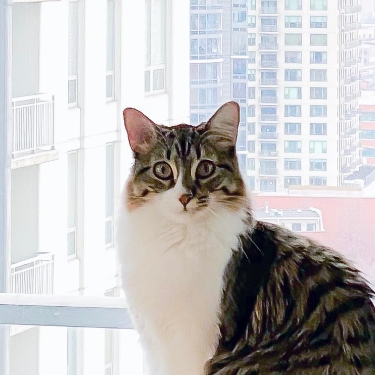
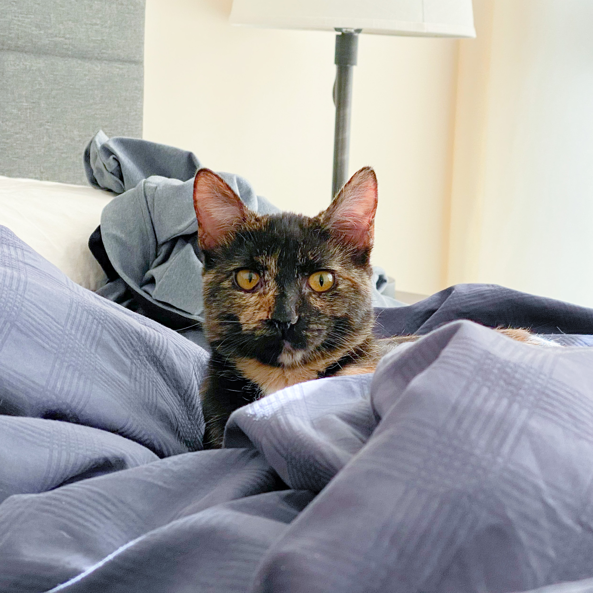

Problem Set 2
Part 2 TestsProblem Set 4
Comment section below + delete comment function + light and dark mode
Problem Set 5
1. Snap.svg vector on top. Made line art with .polyline and used mask for the cirlce container
2. FontAwesome icons
Nori
Chako
fun facts:
- they live in chicago
- nori's birthday is 3/8/2020 and chako's is 8/3/2020
- nori understands "sit" and "paw"
- nori says "maow" instead of "meow"
- chako's a rescue
- chako understands "food?"
- chako's a better jumper than nori despite the age difference
Comments
Anonymous Voices